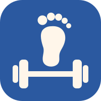
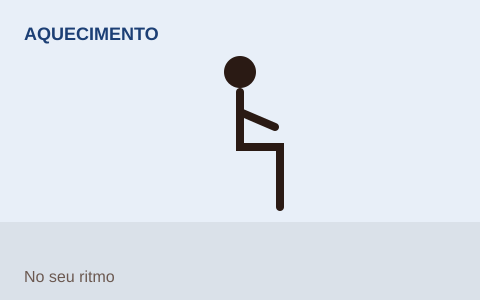

Força no Passo
Força nas pernas, firmeza no passo.Autonomia para o dia a dia.
Indicado por

O Força no Passo traz exercícios genéricos de força e equilíbrio, sem orientação individual. Ele não substitui avaliação médica, de fisioterapia ou de profissional de educação física. Responsável técnico: , CREF .
Força nas pernas, firmeza no passo.Autonomia para o dia a dia.
Indicado por
Aquecimento5:00 restantes

Mantenha a tela ligada durante o treino.
Quantas vezes você ficou em pé?
Um treino de força e equilíbrio de 5 minutos para quem tem 60 anos ou mais, em casa, com uma cadeira, uma toalha e um apoio firme. Você toca em BORA e a voz guia cada movimento, com letras grandes e sem pressa.
O objetivo é o dia a dia: levantar da cadeira com facilidade, subir escada, carregar sacola e andar com o passo firme.
Os exercícios são genéricos e não substituem avaliação médica, de fisioterapia ou de profissional de educação física. Responsável técnico: , CREF . Revisão de fisioterapia: , CREFITO .
Toque num assunto para abrir.
A cada treino os movimentos mudam. O nível sobe com a prática: Primeiros passos (treinos 1 a 8), Passo firme (9 a 20) e Passo forte (21 em diante).
Uma vez por mês, o Teste do mês mostra sua evolução: quantas vezes você senta e levanta em 30 segundos.
Achou difícil? Toque em Versão mais fácil durante o movimento. O ideal é treinar 3 vezes ou mais por semana.
Assim o treino abre com um toque e funciona também sem internet. Se alguém da família puder ajudar, peça para instalar com você.
iPhone (Safari):
Android (Chrome):
No iPhone, o app instalado pode começar a contagem do zero. Se acontecer, use Meu código.
Um lembrete de segunda a sexta na agenda do celular: “Treino Força no Passo – 5 min”.
Que horas?
No iPhone, o arquivo abre no app Calendário: toque em “Adicionar”.
Se o celular apagar sua contagem, este código recupera:
FNC-0
As legendas aparecem sempre.
Sim. Gratuito e sem cadastro.
Não. Só uma cadeira firme encostada na parede, uma toalha e um apoio firme, como a bancada da pia.
Converse antes com seu médico ou fisioterapeuta. O Força no Passo foi pensado para quem anda sem ajuda, e os movimentos de equilíbrio são sempre com apoio.
Sim. Aumente o tamanho do texto nos ajustes do celular, em "Tela" ou "Acessibilidade". O app acompanha.
Sim. Depois de aberto uma vez com internet, o app guarda tudo no celular.
Não pedimos nome, e-mail, telefone ou dado de saúde. A contagem de treinos e os resultados do Teste do mês ficam só no seu celular.
Sem cadastro e sem cookies de rastreamento. A contagem de treinos, os resultados do Teste do mês e suas preferências ficam só neste celular.
Usamos um contador de acessos sem cookies e sem dados pessoais, que registra apenas números agregados, como quantos treinos foram concluídos e em que faixa ficaram os resultados do Teste do mês, nunca o resultado de uma pessoa.